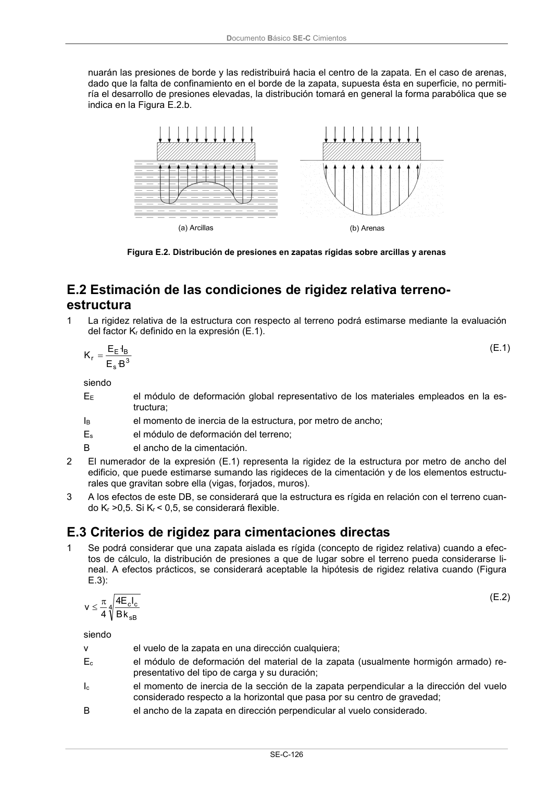

DB-SE-C · Página 131 · versión 2019-12-20
SHA256: a71133f4b0dca253e45ea3071c70f2a512354bcc5cd841bf89b1a502f567ac5e · página física 131 de 165 · métodos de encabezado
solo si están cotejados.
Documento · ← p. 130 · p. 132 →
Formatos: Markdown · JSON de bloques · PDF p. 131 · imagen PNG
Documento Básico SE-C Cimientos SE-C-126 nuarán las presiones de borde y las redistribuirá hacia el centro de la zapata. En el caso de arenas, dado que la falta de confinamiento en el borde de la zapata, supuesta ésta en superficie, no permiti- ría el desarrollo de presiones elevadas, la distribución tomará en general la forma parabólica que se indica en la Figura E.2.b. Figura E.2. Distribución de presiones en zapatas rígidas sobre arcillas y arenas E.2 Estimación de las condiciones de rigidez relativa terreno- estructura 1 La rigidez relativa de la estructura con respecto al terreno podrá estimarse mediante la evaluación del factor Kr definido en la expresión (E.1). 3 s B E r B · E I· E K (E.1) siendo EE el módulo de deformación global representativo de los materiales empleados en la es- tructura; IB el momento de inercia de la estructura, por metro de ancho; Es el módulo de deformación del terreno; B el ancho de la cimentación. 2 El numerador de la expresión (E.1) representa la rigidez de la estructura por metro de ancho del edificio, que puede estimarse sumando las rigideces de la cimentación y de los elementos estructu- rales que gravitan sobre ella (vigas, forjados, muros). 3 A los efectos de este DB, se considerará que la estructura es rígida en relación con el terreno cuan- do Kr >0,5. Si Kr < 0,5, se considerará flexible. E.3 Criterios de rigidez para cimentaciones directas 1 Se podrá considerar que una zapata aislada es rígida (concepto de rigidez relativa) cuando a efec- tos de cálculo, la distribución de presiones a que de lugar sobre el terreno pueda considerarse li- neal. A efectos prácticos, se considerará aceptable la hipótesis de rigidez relativa cuando (Figura E.3): 4 sB c c k B I E 4 4 v (E.2) siendo v el vuelo de la zapata en una dirección cualquiera; Ec el módulo de deformación del material de la zapata (usualmente hormigón armado) re- presentativo del tipo de carga y su duración; Ic el momento de inercia de la sección de la zapata perpendicular a la dirección del vuelo considerado respecto a la horizontal que pasa por su centro de gravedad; B el ancho de la zapata en dirección perpendicular al vuelo considerado.
